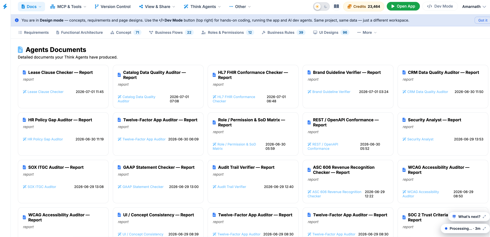
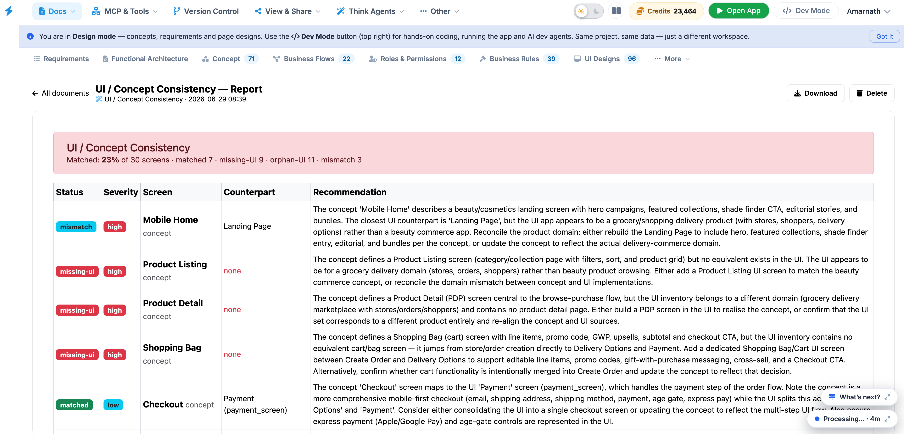

Agents Documents
The Agents Documents page serves as the governance and compliance hub within the Think4ever platform. It centralizes all automated audit, architectural, and security evaluation reports produced by specialized AI agents during the system design lifecycle.

Interface Layout & Features
- Agents Documents Header: Confirms you are viewing the primary directory of detailed outputs generated by active Think Agents.
- Document Cards: Interactive tiles displaying the document title (e.g., PCI-DSS v4.0 Auditor — Report), the generating agent, and the precise creation timestamp.
-
Top Navigation Bar:
Offers one-click switching across all core project
dimensions:
- Requirements
- Functional Architecture
- Concept
- Business Flows
- Roles & Permissions
- Business Rules
- UI Designs
- Global Navigation & Mode Controls: Top bar provides quick access to workspace features (Docs, MCP & Tools, Version Control, View & Share, Think Agents), credit balance indicators, and environment switching (Open App / Dev Mode).
Available Document Categories
- Security & Regulatory Compliance: Standardized evaluation reports including SOC 2 Trust Criteria Readiness, ISO 27001 Annex A Mapper, NIST CSF 2.0 Assessor, OWASP Top 10 Auditor, PCI-DSS v4.0 Auditor, and HIPAA Safeguards Auditor.
- Financial & Accounting Governance: Specialized reports for financial systems, such as ASC 606 Revenue Recognition Checker, SOX ITGC Auditor, and GAAP Statement Checker.
- Architecture & Standards Conformance: Analysis files covering software design integrity, including Twelve-Factor App Auditor, REST / OpenAPI Conformance, HL7 FHIR Conformance Checker, and Requirements Traceability Matrix.
- Quality & Operational Risk: Governance assessments including Role / Permission & SoD Matrix, Audit Trail Verifier, WCAG Accessibility Auditor, Brand Guideline Verifier, and UI / Concept Consistency.
User Instructions
- Locate a Report: Scroll through the grid or filter using the top navigation categories.
- Review Timestamps: Check the bottom-right date and time on any card to ensure you are referencing the latest generated run.
- Open Document: Click directly on any document card to open the full detailed audit view on the main canvas.
- Export or Share: Use the View & Share button in the header menu to distribute generated compliance reports to external auditors or project stakeholders.
